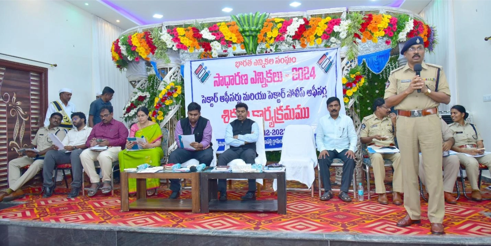
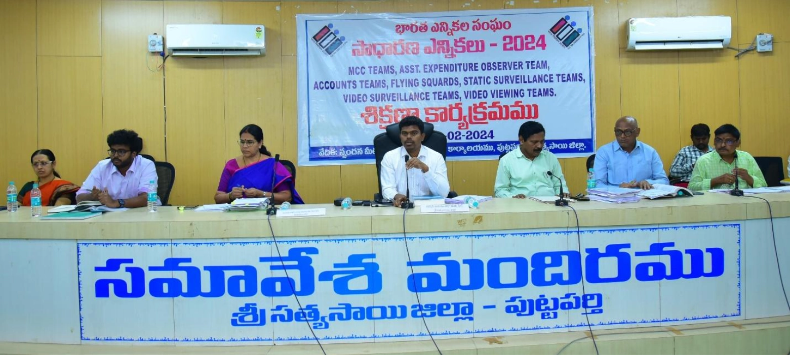
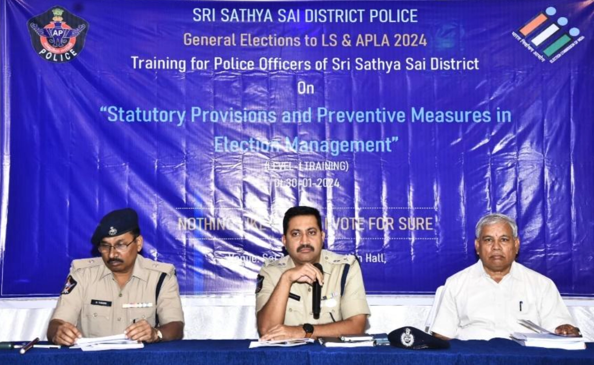
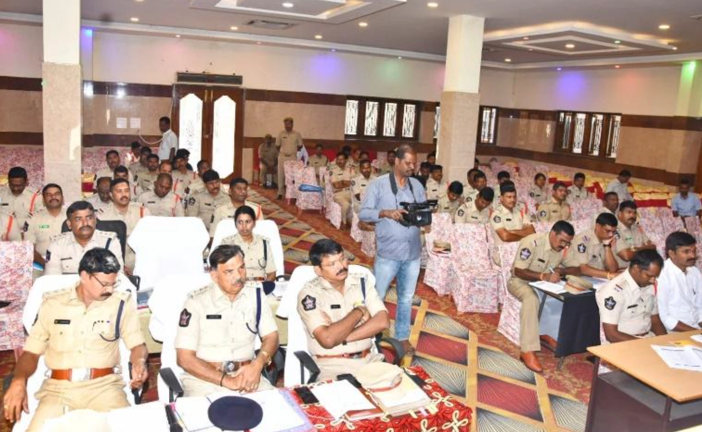

TRAINING PROGRAMME
-
SECTOR POLICE OFFICERS TRAINING
We have conducted training to all sector police office officers in the district.
 -
POLICE STAFF DEPLOYED IN MCC, SST, FST
Conducted training to all the FSTs, SSTs MCC teams in the district and explained about their roles and responsibilities.
 -
LEVEL-1 TRAINING
Topics
- Over view of the Election Process
- Model Code of Conduct
- Role and Responsibilities of Police
- Electoral offences
- Preventive Measures
- Statutary provisions
- Representation of peoples act1951
- Legal provisions to preventive measures
- Pole day scenario and practical application
- Case studies and practical applications
 -
SUPERVIOSARY OFFICER TRAINING DY.SP, PI & PSI
Topics
- Expenditure Monitoring: Various methods of inducement of Voters and the legal guidelines in the form of ECI directions and instructions on the subject.
- Investigation of Electoral offences and Complaint Monitoring system:
- Tracking of election related violence and offence
- Model Code of Conduct Monitoring and Violations
- Defacement of public property: The Election Commission has been issuing detailed instructions regarding prevention of Defacement of Public Property and other connected issues from time to time. The steps to be taken to implement the Commission's order in the context of prevailing law, if any; applicable to the State should be properly explained.
- Flying Squads and Static Surveillance Teams (SSTs)
- Inter-State Border Check Post Operations
- Control Room Operations
- Prohibition & Excise
- Election Cell Management
- Police Patrols & Coordination with Executive Magistrates
- Security to Candidates/Observers
- Strong Room Security & Security of EVM/VVPAT in transit
- Incident Reporting Poll Day Duties
- Web Portal Management and Daily Report Compilation
- Security at the Polling Stations
- Coordination with CAPF/SAPF, Presiding Officer & Polling Staff: Role and Responsibilities in relation to each should be emphasised
- Do's & Don'ts for Security Staff
-
SP OFFFICE ELECTION CELL
Topics
- Preparation of District Election Management Plan
- Polling Station Plan
- Manpower plan
- Training plan
- Movement Plan
- Force Deployment plan
- EVM Management Plan
- Miscellaneous (special focus on role of police in facilitating these activities) SVEEP, Material Procurement, risk management Plan. Technology Use plan, Distribution Centre- Reception Centre etc
- Counting Day Plan
- Nomination Security Plan
- Poll Day Plan
- 72 Hours Security Plan
- Police staff Welfare Plan
- Health, First Aid and Evacuation Plan
- Monitoring of enforcement of MCC
- Monitoring of Complaint Monitoring System in the district
- Maintaining the database of history of electoral offences.
- Vulnerability mapping and identification of critical polling station:
- Monitoring Expenditure Monitoring
- Monitoring of issues related to defacement of public properties
-
Coordinate with the CAPF:
- Preparation of material to be given to the CAPF, that is: list of vulnerable pockets, terrain and weather condition of the district, list of PS and locations, communication plan,
- Do's and don'ts for the CAPF
- Plan for pre-poll deployment, etc.
- DISTRICT LEVEL MASTER TRAINING